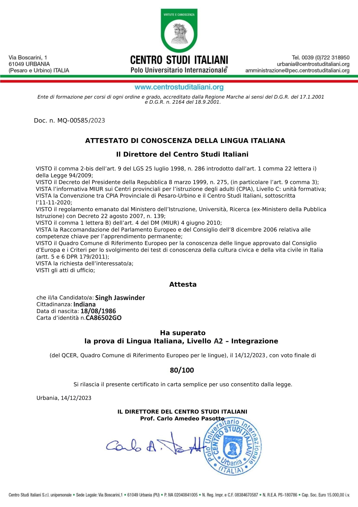

La certificazione dell'italiano a livello A2
https://www.centrostuditaliani.org SINHG JASWINDER nato il 18/08/1986 a KUP KHURDIDILAWARGARH, PUNJAB (INDIANA) C.F SNGIWN86M182222C N.Reg 0585/2023 ESAME A2 SUPERATO
